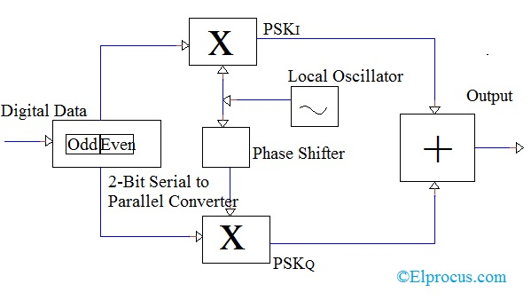
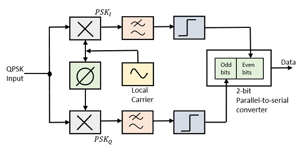
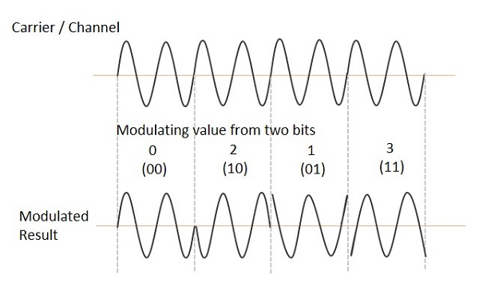

Modulation
•The QPSK Modulator uses a bit-splitter, two multipliers with
local oscillator, a 2-bit serial to parallel converter, and a summer circuit
•At the modulator’s input, the message signal’s even bits and odd bits
are separated by the bits splitter and are multiplied with the same carrier
to generate odd BPSK (called as PSKI) and even BPSK (called as PSKQ).
•The PSKQ signal is anyhow phase shifted by 90° before being modulated.
Demodulation
•The QPSK Demodulator uses two product demodulator circuits with local
oscillator, two band pass filters, two integrator circuits, and a 2-bit
parallel to serial converter.
Advantages and Disadvantages
•It provides good noise immunity.
•Compared to BPSK, bandwidth used by QPSK is reduced to half.
•Carrier power remains constant as the variation in the QPSK amplitude is small.
•The information transmission rate of Quadrature Phase Shift Keying is higher
as it transmits two bits per carrier symbol.
•Low error probability compared to other methods.
•Effective utilization of available transmission bandwidth.
•The disadvantage of QPSK compared to BPSK is the circuit complexity.




